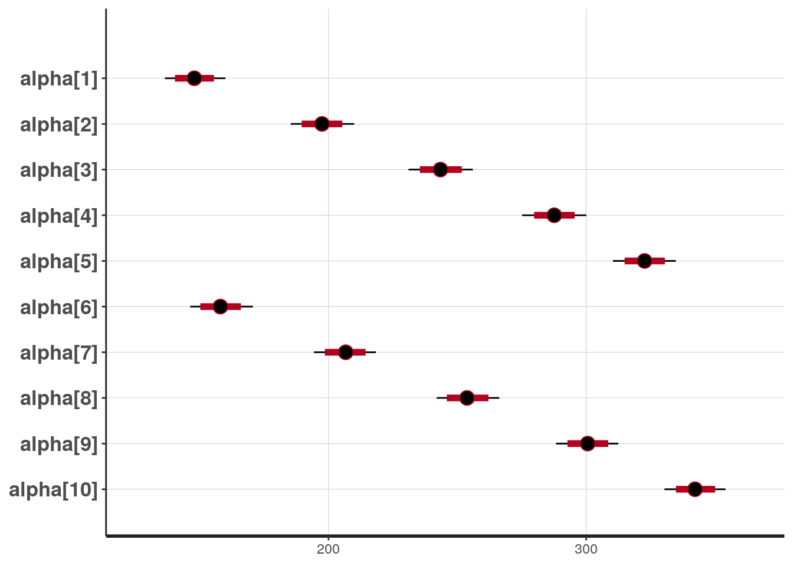

This is an example of running rstan inside this project’s docker container. For more information on Stan, please visit this page.
## Loading required package: StanHeaders## Loading required package: ggplot2## rstan (Version 2.19.2, GitRev: 2e1f913d3ca3)## For execution on a local, multicore CPU with excess RAM we recommend calling
## options(mc.cores = parallel::detectCores()).
## To avoid recompilation of unchanged Stan programs, we recommend calling
## rstan_options(auto_write = TRUE)##
## Attaching package: 'rstan'## The following object is masked from 'package:coda':
##
## traceplot## The following object is masked from 'package:R2OpenBUGS':
##
## monitor## $x
## [1] 8 15 22 29 36
##
## $xbar
## [1] 22
##
## $N
## [1] 30
##
## $T
## [1] 5
##
## $Y
## [,1] [,2] [,3] [,4] [,5]
## [1,] 151 141 154 157 132
## [2,] 199 189 200 212 185
## [3,] 246 231 244 259 237
## [4,] 283 275 289 307 286
## [5,] 320 305 325 336 331
## [6,] 145 159 171 152 160
## [7,] 199 201 221 203 207
## [8,] 249 248 270 246 257
## [9,] 293 297 326 286 303
## [10,] 354 338 358 321 345
## [11,] 147 177 163 154 169
## [12,] 214 236 216 205 216
## [13,] 263 285 242 253 261
## [14,] 312 350 281 298 295
## [15,] 328 376 312 334 333
## [16,] 155 134 160 139 157
## [17,] 200 182 207 190 205
## [18,] 237 220 248 225 248
## [19,] 272 260 288 267 289
## [20,] 297 296 324 302 316
## [21,] 135 160 142 146 137
## [22,] 188 208 187 191 180
## [23,] 230 261 234 229 219
## [24,] 280 313 280 272 258
## [25,] 323 352 316 302 291
## [26,] 159 143 156 157 153
## [27,] 210 188 203 211 200
## [28,] 252 220 243 250 244
## [29,] 298 273 283 285 286
## [30,] 331 314 317 323 324The following model definition is taken from rstan Getting Started Guide.
# model definition
rats_model_file <-
"https://raw.githubusercontent.com/stan-dev/example-models/master/bugs_examples/vol1/rats/rats.stan"
readLines(rats_model_file)## [1] "# http://www.mrc-bsu.cam.ac.uk/bugs/winbugs/Vol1.pdf"
## [2] "# Page 3: Rats"
## [3] "data {"
## [4] " int<lower=0> N;"
## [5] " int<lower=0> T;"
## [6] " real x[T];"
## [7] " real y[N,T];"
## [8] " real xbar;"
## [9] "}"
## [10] "parameters {"
## [11] " real alpha[N];"
## [12] " real beta[N];"
## [13] ""
## [14] " real mu_alpha;"
## [15] " real mu_beta; // beta.c in original bugs model"
## [16] ""
## [17] " real<lower=0> sigmasq_y;"
## [18] " real<lower=0> sigmasq_alpha;"
## [19] " real<lower=0> sigmasq_beta;"
## [20] "}"
## [21] "transformed parameters {"
## [22] " real<lower=0> sigma_y; // sigma in original bugs model"
## [23] " real<lower=0> sigma_alpha;"
## [24] " real<lower=0> sigma_beta;"
## [25] ""
## [26] " sigma_y <- sqrt(sigmasq_y);"
## [27] " sigma_alpha <- sqrt(sigmasq_alpha);"
## [28] " sigma_beta <- sqrt(sigmasq_beta);"
## [29] "}"
## [30] "model {"
## [31] " mu_alpha ~ normal(0, 100);"
## [32] " mu_beta ~ normal(0, 100);"
## [33] " sigmasq_y ~ inv_gamma(0.001, 0.001);"
## [34] " sigmasq_alpha ~ inv_gamma(0.001, 0.001);"
## [35] " sigmasq_beta ~ inv_gamma(0.001, 0.001);"
## [36] " alpha ~ normal(mu_alpha, sigma_alpha); // vectorized"
## [37] " beta ~ normal(mu_beta, sigma_beta); // vectorized"
## [38] " for (n in 1:N)"
## [39] " for (t in 1:T) "
## [40] " y[n,t] ~ normal(alpha[n] + beta[n] * (x[t] - xbar), sigma_y);"
## [41] ""
## [42] "}"
## [43] "generated quantities {"
## [44] " real alpha0;"
## [45] " alpha0 <- mu_alpha - xbar * mu_beta;"
## [46] "}"rats_fit <- stan(
file = rats_model_file,
data = list(
"x" = as.numeric(rats_data[["x"]]),
"xbar" = as.numeric(rats_data[["xbar"]]),
"N" = as.integer(rats_data[["N"]]),
"T" = as.integer(rats_data[["T"]]),
"y" = as.matrix(rats_data[["Y"]])
)
)## Warning in normalizePath(file): path[1]="https://raw.githubusercontent.com/stan-
## dev/example-models/master/bugs_examples/vol1/rats/rats.stan": No such file or
## directory## DIAGNOSTIC(S) FROM PARSER:
## Info: Comments beginning with # are deprecated. Please use // in place of # for line comments.
## Info: Comments beginning with # are deprecated. Please use // in place of # for line comments.
## Info: Comments beginning with # are deprecated. Please use // in place of # for line comments.
## Info: Comments beginning with # are deprecated. Please use // in place of # for line comments.
## Info: assignment operator <- deprecated in the Stan language; use = instead.
## Info: assignment operator <- deprecated in the Stan language; use = instead.
## Info: assignment operator <- deprecated in the Stan language; use = instead.
## Info: assignment operator <- deprecated in the Stan language; use = instead.## Warning: There were 47 divergent transitions after warmup. Increasing adapt_delta above 0.8 may help. See
## http://mc-stan.org/misc/warnings.html#divergent-transitions-after-warmup## Warning: There were 3 chains where the estimated Bayesian Fraction of Missing Information was low. See
## http://mc-stan.org/misc/warnings.html#bfmi-low## Warning: Examine the pairs() plot to diagnose sampling problems## Warning: Bulk Effective Samples Size (ESS) is too low, indicating posterior means and medians may be unreliable.
## Running the chains for more iterations may help. See
## http://mc-stan.org/misc/warnings.html#bulk-ess## Warning: Tail Effective Samples Size (ESS) is too low, indicating posterior variances and tail quantiles may be unreliable.
## Running the chains for more iterations may help. See
## http://mc-stan.org/misc/warnings.html#tail-ess## Inference for Stan model: rats.
## 4 chains, each with iter=2000; warmup=1000; thin=1;
## post-warmup draws per chain=1000, total post-warmup draws=4000.
##
## mean se_mean sd 2.5% 25% 50% 75% 97.5%
## alpha[1] 147.93 0.09 5.99 136.49 143.99 147.90 151.82 159.97
## alpha[2] 197.40 0.10 6.22 185.36 193.10 197.45 201.58 209.97
## alpha[3] 243.45 0.09 6.34 231.04 239.11 243.43 247.70 255.98
## alpha[4] 287.60 0.09 6.30 275.11 283.46 287.61 291.72 300.03
## alpha[5] 322.66 0.10 6.16 310.40 318.52 322.67 326.75 334.82
## alpha[6] 158.10 0.09 6.16 146.31 153.96 158.02 162.17 170.66
## alpha[7] 206.60 0.09 6.14 194.34 202.55 206.67 210.76 218.35
## alpha[8] 253.90 0.10 6.22 241.97 249.75 253.75 258.09 266.24
## alpha[9] 300.53 0.09 6.19 288.29 296.26 300.57 304.88 312.44
## alpha[10] 342.38 0.11 6.03 330.39 338.44 342.25 346.46 354.11
## alpha[11] 162.74 0.09 6.08 150.71 158.69 162.81 166.77 174.95
## alpha[12] 217.54 0.09 6.07 205.90 213.48 217.42 221.64 229.95
## alpha[13] 260.52 0.09 6.06 248.73 256.46 260.58 264.49 272.47
## alpha[14] 306.50 0.09 6.13 294.38 302.48 306.58 310.45 318.40
## alpha[15] 335.73 0.10 6.21 323.22 331.65 335.65 339.89 347.72
## alpha[16] 149.83 0.09 6.15 137.70 145.82 149.86 154.05 161.88
## alpha[17] 197.08 0.10 6.20 185.08 192.83 197.10 201.36 209.03
## alpha[18] 235.70 0.09 6.19 223.06 231.64 235.70 239.84 247.75
## alpha[19] 274.85 0.12 6.11 262.81 270.68 274.89 279.05 286.56
## alpha[20] 306.21 0.09 6.32 293.75 301.99 306.07 310.50 319.02
## alpha[21] 144.93 0.08 6.17 133.13 140.58 144.85 149.20 156.97
## alpha[22] 191.22 0.09 5.99 179.60 187.12 191.08 195.32 203.22
## alpha[23] 234.48 0.09 6.32 222.64 230.11 234.48 238.83 246.45
## alpha[24] 280.21 0.10 6.14 268.32 276.03 280.17 284.33 292.29
## alpha[25] 316.12 0.09 6.14 304.20 312.10 316.09 320.04 328.33
## alpha[26] 154.45 0.11 6.27 142.07 150.25 154.37 158.65 167.21
## alpha[27] 202.81 0.09 6.13 190.81 198.48 202.78 206.86 215.10
## alpha[28] 241.78 0.09 6.14 229.10 237.61 241.85 245.98 253.43
## alpha[29] 284.44 0.08 6.13 272.47 280.42 284.49 288.55 296.14
## alpha[30] 321.17 0.12 6.30 309.15 316.96 321.07 325.29 333.74
## beta[1] -0.12 0.01 0.20 -0.52 -0.23 -0.11 0.00 0.27
## beta[2] -0.10 0.00 0.19 -0.48 -0.21 -0.10 0.02 0.31
## beta[3] -0.08 0.01 0.20 -0.47 -0.20 -0.09 0.03 0.33
## beta[4] -0.05 0.01 0.21 -0.42 -0.18 -0.07 0.05 0.41
## beta[5] -0.04 0.01 0.21 -0.41 -0.17 -0.05 0.07 0.45
## beta[6] -0.07 0.01 0.19 -0.43 -0.19 -0.08 0.04 0.35
## beta[7] -0.07 0.01 0.19 -0.44 -0.19 -0.08 0.03 0.36
## beta[8] -0.08 0.01 0.20 -0.45 -0.20 -0.08 0.03 0.36
## beta[9] -0.08 0.01 0.19 -0.46 -0.19 -0.08 0.03 0.32
## beta[10] -0.13 0.01 0.20 -0.57 -0.24 -0.12 -0.01 0.24
## beta[11] -0.07 0.01 0.20 -0.45 -0.19 -0.08 0.04 0.37
## beta[12] -0.12 0.01 0.20 -0.56 -0.23 -0.11 0.00 0.28
## beta[13] -0.13 0.01 0.20 -0.55 -0.24 -0.12 -0.01 0.25
## beta[14] -0.18 0.01 0.22 -0.71 -0.28 -0.15 -0.04 0.18
## beta[15] -0.12 0.01 0.19 -0.52 -0.23 -0.12 0.00 0.25
## beta[16] -0.09 0.01 0.19 -0.46 -0.20 -0.09 0.03 0.32
## beta[17] -0.07 0.01 0.20 -0.45 -0.19 -0.08 0.04 0.34
## beta[18] -0.07 0.01 0.20 -0.44 -0.19 -0.08 0.04 0.35
## beta[19] -0.05 0.01 0.21 -0.41 -0.17 -0.07 0.06 0.41
## beta[20] -0.04 0.01 0.21 -0.41 -0.17 -0.06 0.06 0.46
## beta[21] -0.10 0.01 0.19 -0.47 -0.21 -0.10 0.01 0.30
## beta[22] -0.12 0.01 0.20 -0.57 -0.23 -0.12 0.00 0.25
## beta[23] -0.14 0.01 0.20 -0.58 -0.25 -0.13 -0.02 0.21
## beta[24] -0.18 0.01 0.21 -0.65 -0.29 -0.16 -0.04 0.19
## beta[25] -0.20 0.01 0.23 -0.76 -0.32 -0.17 -0.06 0.15
## beta[26] -0.09 0.01 0.19 -0.49 -0.20 -0.09 0.02 0.31
## beta[27] -0.09 0.01 0.19 -0.47 -0.20 -0.10 0.02 0.32
## beta[28] -0.08 0.01 0.21 -0.47 -0.20 -0.09 0.03 0.35
## beta[29] -0.10 0.01 0.20 -0.51 -0.22 -0.11 0.01 0.33
## beta[30] -0.10 0.01 0.20 -0.50 -0.21 -0.10 0.02 0.31
## mu_alpha 239.36 0.17 11.64 215.20 232.01 239.24 246.86 262.85
## mu_beta -0.10 0.00 0.12 -0.32 -0.18 -0.10 -0.02 0.13
## sigmasq_y 189.81 0.48 24.72 149.09 172.14 187.18 204.71 243.22
## sigmasq_alpha 4223.44 19.95 1206.89 2512.74 3369.43 4029.62 4843.19 7204.92
## sigmasq_beta 0.03 0.00 0.04 0.00 0.01 0.02 0.04 0.16
## sigma_y 13.75 0.02 0.89 12.21 13.12 13.68 14.31 15.60
## sigma_alpha 64.38 0.14 8.86 50.13 58.05 63.48 69.59 84.88
## sigma_beta 0.15 0.01 0.10 0.03 0.08 0.13 0.20 0.40
## alpha0 241.52 0.22 11.98 217.25 233.69 241.38 249.51 265.64
## lp__ -562.50 2.16 19.79 -597.70 -577.23 -563.88 -548.40 -522.88
## n_eff Rhat
## alpha[1] 4137 1.00
## alpha[2] 4137 1.00
## alpha[3] 4642 1.00
## alpha[4] 5113 1.00
## alpha[5] 3645 1.00
## alpha[6] 4215 1.00
## alpha[7] 4556 1.00
## alpha[8] 4149 1.00
## alpha[9] 4584 1.00
## alpha[10] 3045 1.00
## alpha[11] 4353 1.00
## alpha[12] 4546 1.00
## alpha[13] 4090 1.00
## alpha[14] 4275 1.00
## alpha[15] 3582 1.00
## alpha[16] 4687 1.00
## alpha[17] 4082 1.00
## alpha[18] 4349 1.00
## alpha[19] 2647 1.00
## alpha[20] 4484 1.00
## alpha[21] 5718 1.00
## alpha[22] 4525 1.00
## alpha[23] 4480 1.00
## alpha[24] 3510 1.00
## alpha[25] 4663 1.00
## alpha[26] 3131 1.00
## alpha[27] 4424 1.00
## alpha[28] 5186 1.00
## alpha[29] 5251 1.00
## alpha[30] 2916 1.00
## beta[1] 1253 1.00
## beta[2] 1496 1.00
## beta[3] 1350 1.00
## beta[4] 826 1.01
## beta[5] 870 1.00
## beta[6] 1123 1.00
## beta[7] 1201 1.00
## beta[8] 1101 1.00
## beta[9] 1238 1.00
## beta[10] 1138 1.00
## beta[11] 1056 1.00
## beta[12] 1586 1.00
## beta[13] 1291 1.00
## beta[14] 775 1.00
## beta[15] 1280 1.00
## beta[16] 1049 1.01
## beta[17] 1132 1.00
## beta[18] 1209 1.00
## beta[19] 764 1.01
## beta[20] 699 1.01
## beta[21] 1308 1.00
## beta[22] 1219 1.00
## beta[23] 1064 1.00
## beta[24] 613 1.00
## beta[25] 497 1.00
## beta[26] 1270 1.00
## beta[27] 1359 1.00
## beta[28] 1254 1.00
## beta[29] 1444 1.00
## beta[30] 1320 1.00
## mu_alpha 4566 1.00
## mu_beta 552 1.01
## sigmasq_y 2610 1.00
## sigmasq_alpha 3660 1.00
## sigmasq_beta 168 1.01
## sigma_y 2618 1.00
## sigma_alpha 3856 1.00
## sigma_beta 116 1.02
## alpha0 3065 1.00
## lp__ 84 1.04
##
## Samples were drawn using NUTS(diag_e) at Tue Dec 31 10:47:55 2019.
## For each parameter, n_eff is a crude measure of effective sample size,
## and Rhat is the potential scale reduction factor on split chains (at
## convergence, Rhat=1).## 'pars' not specified. Showing first 10 parameters by default.## ci_level: 0.8 (80% intervals)## outer_level: 0.95 (95% intervals)
## R version 3.6.2 (2019-12-12)
## Platform: x86_64-pc-linux-gnu (64-bit)
## Running under: Debian GNU/Linux 10 (buster)
##
## Matrix products: default
## BLAS/LAPACK: /usr/lib/x86_64-linux-gnu/libopenblasp-r0.3.5.so
##
## locale:
## [1] LC_CTYPE=en_US.UTF-8 LC_NUMERIC=C
## [3] LC_TIME=en_US.UTF-8 LC_COLLATE=en_US.UTF-8
## [5] LC_MONETARY=en_US.UTF-8 LC_MESSAGES=C
## [7] LC_PAPER=en_US.UTF-8 LC_NAME=C
## [9] LC_ADDRESS=C LC_TELEPHONE=C
## [11] LC_MEASUREMENT=en_US.UTF-8 LC_IDENTIFICATION=C
##
## attached base packages:
## [1] stats graphics grDevices utils datasets methods base
##
## other attached packages:
## [1] rstan_2.19.2 ggplot2_3.2.1 StanHeaders_2.19.0 rjags_4-10
## [5] coda_0.19-3 R2OpenBUGS_3.2-3.2
##
## loaded via a namespace (and not attached):
## [1] Rcpp_1.0.3 pillar_1.4.3 compiler_3.6.2 prettyunits_1.0.2
## [5] tools_3.6.2 boot_1.3-23 digest_0.6.23 pkgbuild_1.0.6
## [9] lattice_0.20-38 evaluate_0.14 lifecycle_0.1.0 tibble_2.1.3
## [13] gtable_0.3.0 pkgconfig_2.0.3 rlang_0.4.2 cli_2.0.0
## [17] yaml_2.2.0 parallel_3.6.2 xfun_0.11 loo_2.2.0
## [21] gridExtra_2.3 withr_2.1.2 stringr_1.4.0 knitr_1.26
## [25] dplyr_0.8.3 stats4_3.6.2 grid_3.6.2 tidyselect_0.2.5
## [29] glue_1.3.1 inline_0.3.15 R6_2.4.1 processx_3.4.1
## [33] fansi_0.4.0 rmarkdown_2.0 farver_2.0.1 callr_3.4.0
## [37] purrr_0.3.3 magrittr_1.5 codetools_0.2-16 htmltools_0.4.0
## [41] scales_1.1.0 ps_1.3.0 matrixStats_0.55.0 assertthat_0.2.1
## [45] colorspace_1.4-1 labeling_0.3 stringi_1.4.3 lazyeval_0.2.2
## [49] munsell_0.5.0 crayon_1.3.4